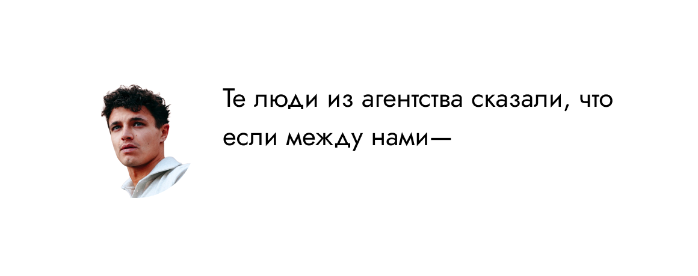
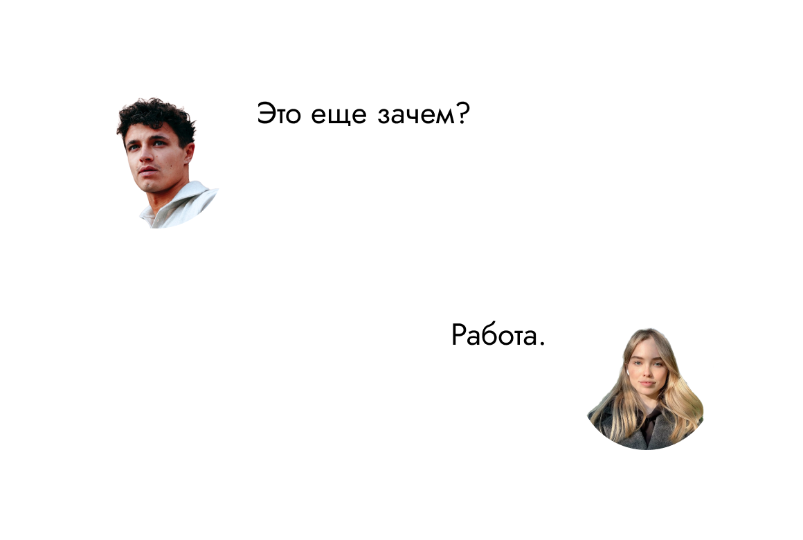
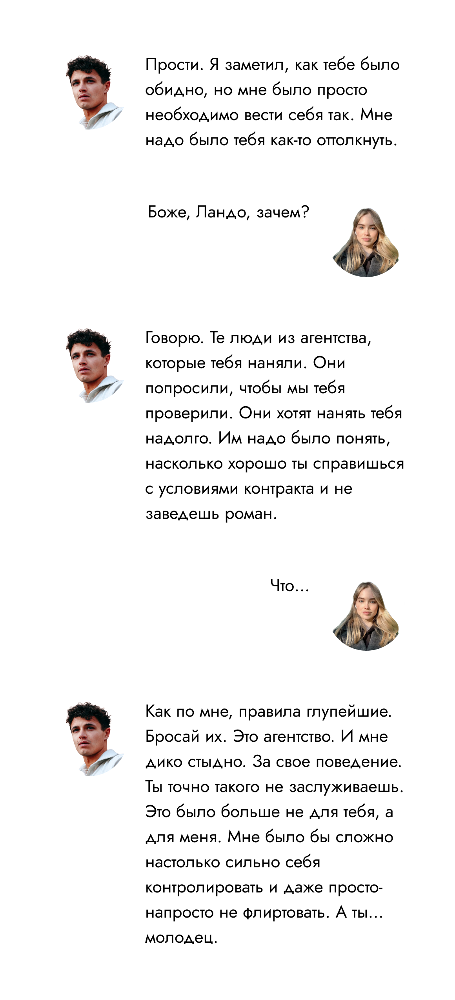
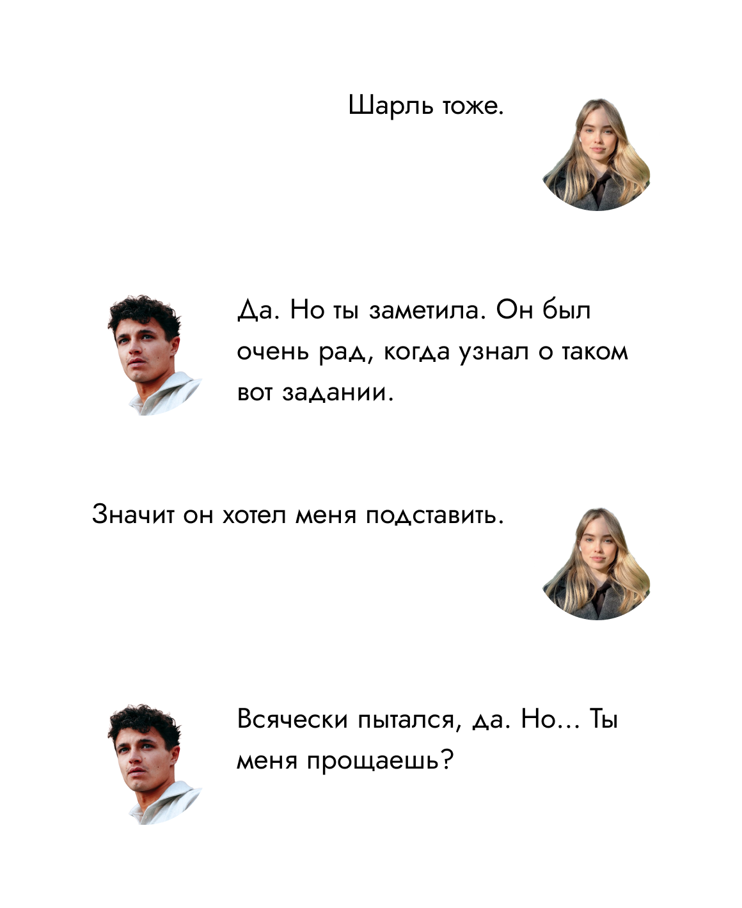
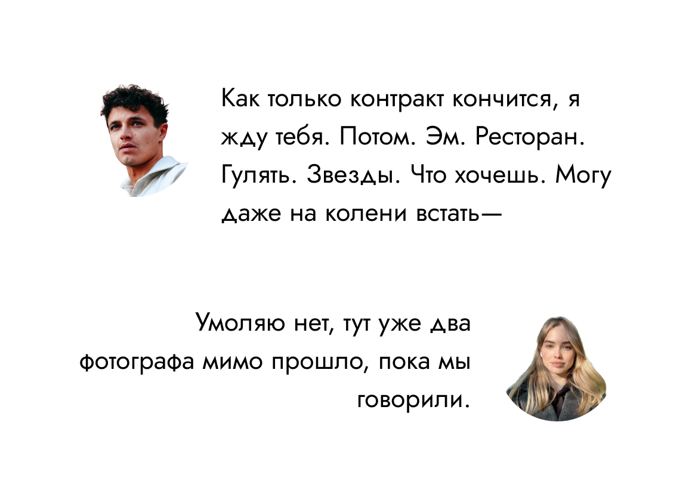
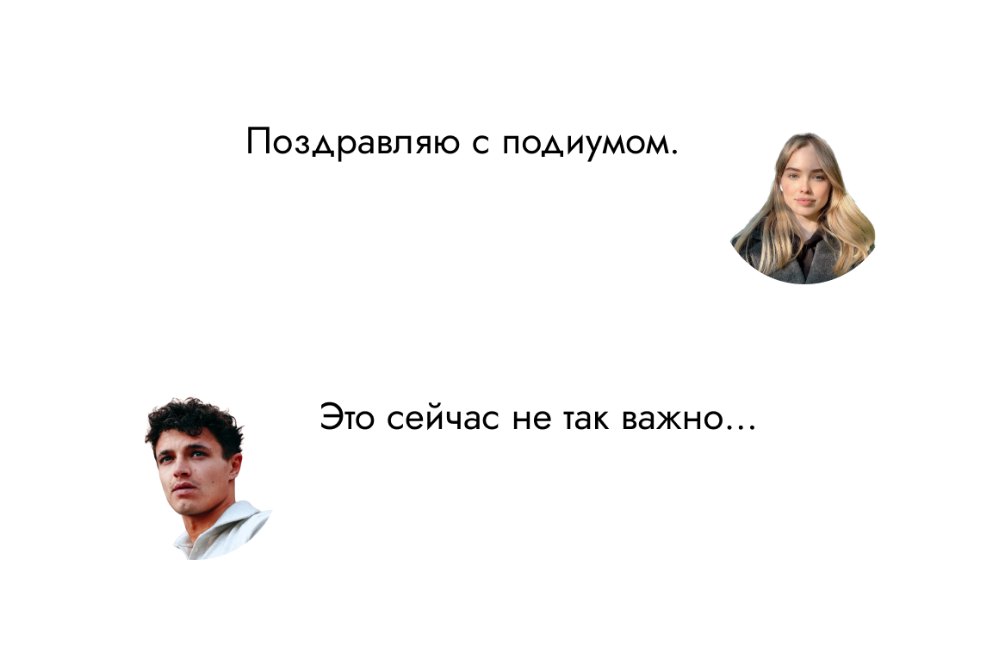

Гонка была короткой, машины ведь были винтажные (2010-е — новый винтаж), долго их не погоняешь. Результаты были не такими предсказуемыми как ожидалось. Феррари Шарля впереди, подгоняемая двумя Макларенами. Ну вот, не надо переживать на счет фото Шарля. Льюис попал в грязный воздушный поток, поскользнулся на поребреке и вылетел из гонки. Софи сразу написала, что его фото делать не надо. Не уточнила почему.
Значит Ландо и Оскар. Они на импровизированном подиуме, их снимают от и до, до тех пор пока не появляется Шарль, и вот все внимание приковано к нему. Его куда-то уносит толпа, ты теряешь его из виду.
Людей вокруг так много, но ты чувствуешь чью-то очень крепкую хватку на своем предплечье. Неоновый шлем, визор задран, ты видишь и глаза — эта непонятная смесь каре-зеленого.

Ты достаешь телефон. Все-таки фото.
Вопль толпы прерывает его слова, ты делаешь фото. Слышишь его смех.
Под шлемом ты видишь улыбку. Он тянет тебя за локоть, надо вырываться из толпы, да. Что это на него нашло? Вы оказываетесь за гаражом Макларен.
Теперь все имеет смысл.
Ты киваешь. Ландо тут же расплывается в своей очаровательной улыбке.
Улыбка не сходит с его лица, он бросает перчатки на землю, протягивает свои руки к твоим. Как странно ощущать их — такие большие и горячие.
 В начало.